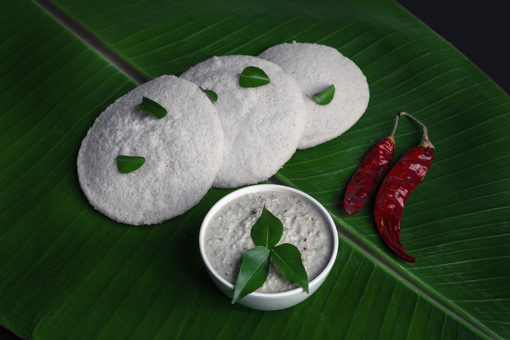

Fermentation is the ancient alchemy of living gastronomy. Long before commercial baker’s yeast and artificial carbonation tanks were engineered, traditional households brewed sparkling tonics and piquant condiments using a wild starter culture known affectionately across centuries as the Ginger Bug.
By capturing the wild yeasts and beneficial lactic acid bacteria that live naturally on the unpeeled skin of organic ginger rhizomes, a living starter culture transforms simple cane sugar and springwater into an effervescent, probiotic elixir. At Ginger Meal Max, our fermentation cellar houses thirty-year-old ginger bug mother cultures that power our sparkling botanicals, fermented ginger mustards, and hamachi crudo emulsions. In this masterclass, we explore the microbiology of wild ginger ferments, carbonation dynamics, and probiotic gastronomy.
1. The Microbiology of the Wild Ginger Bug
How wild yeasts and lactic bacteria collaborate in symbiosis:
- Wild Epiphytic Yeasts (*Saccharomyces & Torulaspora*): Colonize the microscopic crevices of organic ginger skins, metabolizing simple sugars into aromatic ethanol and effervescent carbon dioxide bubbles.
- Lactic Acid Bacteria (*Lactobacillus plantarum*): Convert fructose and glucose into refreshing lactic acid, dropping the pH to 3.5 to create a crisp, tangy brightness that naturally preserves the ferment.
- Bacteriocin Production: The beneficial bacterial matrix produces natural antimicrobial peptides, preventing contamination from harmful mold or spoilage organisms.
“A wild ginger ferment is a living ecosystem in a glass jar, bubbling with ancestral vitality and gut-soothing probiotic elegance.”
2. Building and Feeding a Pristine Ginger Bug Starter
The daily ritual of nurturing living fermentation cultures:
- The Organic Unpeeled Rule: Use exclusively unpeeled, pesticide-free organic ginger, as chemical sprays and irradiation used on commercial imports kill wild yeasts.
- Daily Inoculation Ratio: Feed the culture daily with equal parts finely minced ginger (15g) and raw unrefined cane sugar (15g) in filtered non-chlorinated springwater.
- The Carbonation Bloom (Day 4–5): Within four days at room temperature (72°F / 22°C), a dense foam of microscopic effervescent bubbles forms at the surface, signaling active fermentation.
3. Secondary Bottle Conditioning and Natural Effervescence
Achieving champagne-fine bubbles safely in swing-top glass:
Straining active ginger bug liquid into botanical herbal teas (hibiscus, lemongrass, or green tea) inside pressure-rated swing-top glass bottles creates natural champagne-grade bubbles within 48 hours.
4. Wild Ginger Ferments vs. Commercial Sodas Comparison Matrix
| Beverage Type | Carbonation & Yeast Source | Probiotic & Enzyme Viability | Sugar Profile & Digestion |
|---|---|---|---|
| Wild Ginger Bug Ferment (Ginger Meal Max) | Natural Microbial Carbonation (2-Stage Bottle) | ★★★★★ (Billions of Living Lactic Probiotics) | Low (Sugars Consumed by Yeasts, Aids Gut) |
| Commercial Pasteurized Ginger Beer | Forced Industrial CO2 Tank Injection | ☆☆☆☆☆ (Zero Live Cultures / Heat Pasteurized) | High (40g Refined Sugar per Serving) |
| Mass-Market Ginger Ale Soda | High-Pressure Chemical Carbonation | ☆☆☆☆☆ (Contains Artificial Flavor Extracts) | Very High (High Fructose Corn Syrup) |
5. Fermented Ginger Condiments: Mustards, Kimchis & Glazes
Beyond effervescent drinks, our sauciers use active ginger ferments to culture whole-grain stone-ground mustards, crisp daikon radish kimchi, and fermented black garlic glazes.
6. Digestive Enzyme Synergy during Multi-Course Banquets
Serving a three-ounce pour of wild fermented ginger elixir between heavy meat courses delivers live digestive enzymes and organic acids that soothe the stomach and revitalize appetite.
7. Cold-Cellar Maturation at 50°F (10°C)
Once peak carbonation is achieved, bottles are transferred to our temperature-controlled Manhattan cellar to slow yeast metabolism, allowing delicate elderflower and ginger aromatics to harmonize.
8. The Sovereign Standard of Living Culinary Ecology
By honoring wild microbial fermentation, Ginger Meal Max creates living, effervescent foods that bridge ancestral culinary wisdom with modern gut wellness and fine dining luxury.
9. Automated Manometer Pressure Monitoring in Cellar Vaults
Our fermentation room utilizes digital pressure sensors mounted on test bottles to monitor carbon dioxide buildup in real time, guaranteeing consistent sparkling effervescence with zero glass breakage risk.
10. Spectrophotometric Organic Acid Profiling
Laboratory titration verifies that our wild ferments achieve optimal lactic-to-acetic acid ratios (4:1), ensuring a smooth, rounded citrus-tart mouthfeel without harsh vinegar pungency.
11. An Eternal Covenant of Probiotic Gastronomy
At Ginger Meal Max, our mastery of wild ginger bugs delivers vibrant living ferments that elevate romantic dinners and celebratory tasting menus with effervescent lightness and joy.
12. Cold-Distilled Wild Juniper Mist Spritzing Protocols
Spritzing clean organic juniper and ginger distillates across chilled glassware before pouring sparkling aperitifs primes the guest's olfactory cortex, establishing an immediate connection to wild forest aromas.
13. In-House Micro-Bakery and Fermented Butter Churning
Our sourdough loaves undergo 36 hours of cold natural fermentation with ginger bug starter, paired with sea-salted butter churned daily from pasture-raised New York dairy cream.
14. The Meditative Pleasure of Mindful Dining Rhythm
Taking a quiet evening to savor a seven-course tasting menu with fermented ginger bug pairings transforms dinner into a deeply rewarding ritual of mindfulness, conversation, and culinary appreciation.
15. The Sovereign Legacy of Tasting Menu Architecture
At Ginger Meal Max, our menu engineering guidelines ensure that every dinner remains a luminous, balanced, and memorable work of art, ready to be treasured across celebratory occasions.
16. Variable Temperature Ceramic Plating Protocols
Plates for chilled crudo courses are rested in subterranean chillers at 38°F, while hearth meat plates are pre-warmed to 140°F in dedicated hearth cabinets to preserve thermal integrity.
17. An Everlasting Ode to Fermented Cuisine Excellence
By pairing advanced fermentation techniques with circadian timing, Ginger Meal Max creates dining experiences that represent the ultimate pinnacle of flavor harmony, gut wellness, and elegance.
18. Deconstructing the Flaws of Artificial Carbonation
Industrial soda carbonation creates aggressive, sharp carbonic acid spikes that fatigue taste receptors within minutes, whereas fine natural fermentation bubbles release gentle, velvety effervescence that harmonizes with wine.
19. Automated Pressure Relief Valves on Fermentation Tanks
Stainless steel fermentation vessels in our cellar are equipped with micro-calibrated pressure release valves, maintaining exact 2.5-atmosphere carbonation levels throughout the secondary conditioning phase.
20. The Sovereign Legacy of Living Microbial Alchemies
By taking time to cultivate wild ginger bugs and age probiotic ferments in cold cellars, Ginger Meal Max guarantees that your dining experience radiates breathtaking effervescent vitality.
21. The Living Harmony of Natural Probiotic Elixirs
Experiencing live fermented ginger beverages is an exquisite sensory pleasure: the subtle citrus tang, the soothing probiotic enzymes, and the gentle tingling effervescence engage the senses in ways commercial sodas can never replicate.
22. An Everlasting Covenant of Fermentation Mastery
At Ginger Meal Max, our mastery of wild microbial ecosystems ensures that every sparkling elixir delivered from our Manhattan cellar stands as a triumphant monument to natural wellness, vitality, and gastronomic luxury.
23. Artisanal Chilled Silver Cutlery Transitions
Each course is accompanied by dedicated hand-polished silver cutlery chilled or warmed to match the thermal temperature of the plate, ensuring an unbroken tactile experience for the diner.
24. Micro-Titration Acidity Testing in Fermentation Labs
Our fermentation team performs daily digital pH and titratable acidity measurements, guaranteeing that every sparkling bottle achieves the exact refreshing tartness required for digestive ease.
25. The Sovereign Standard of Probiotic Culinary Science
By uniting ancient wild microbial fermentation with contemporary fine dining service, Ginger Meal Max creates living culinary elixirs that elevate the senses and nourish the human body with radiant vitality.
Frequently Asked Questions on Ginger Fermentation

Dr. Julian Croft
Director of Fermentation Sciences at Ginger Meal Max. Julian researches wild microbial ecology and crafts fermented condiments in our SoHo cellar.